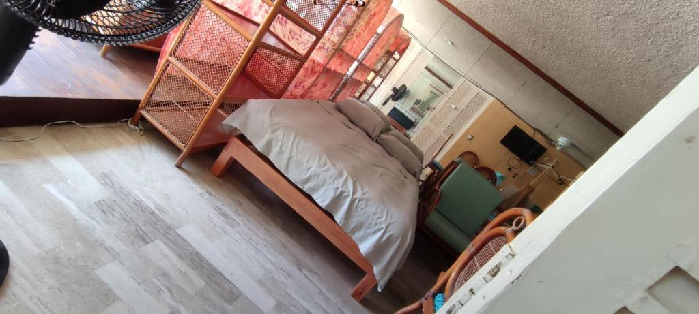
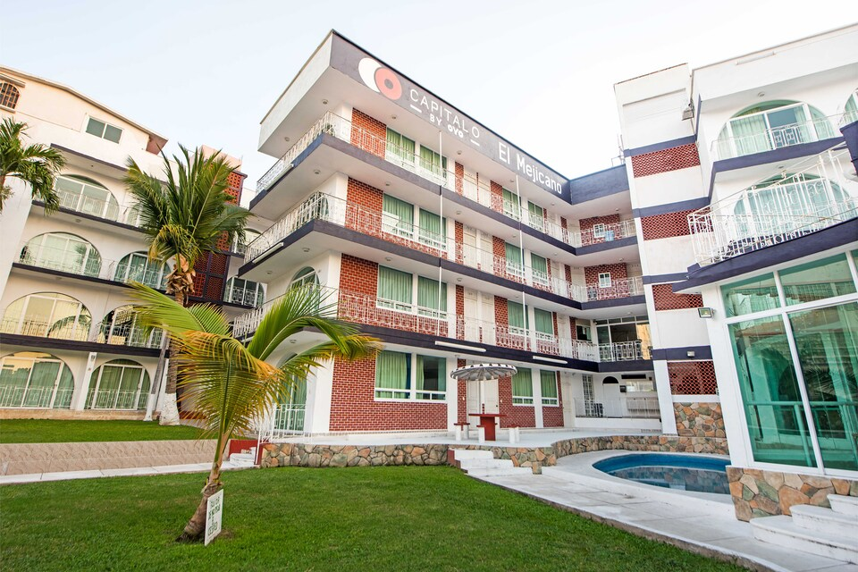
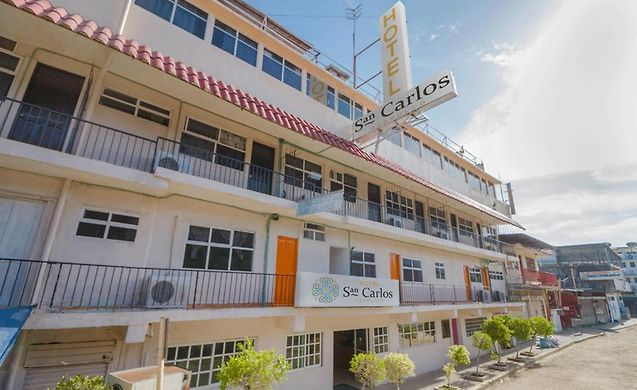

Precio por noche: $218 la noche (dos adultos)
Ubicación: costera Acapulco
Convenientemente ubicado en una zona céntrica de Acapulco, El IOW4 LM Yoga Lounge ofrece vistas al mar, piscina al aire libre y salón compartido. Este alojamiento familiar ofrece aparcamiento privado gratuito, cocina compartida y WiFi gratuita.
Precio por noche: $390 la noche(dos adultos)
Ubicación:00, Av Costera Miguel Alemán 362 Zona Urbana 49, Acapulco de Juárez, Gro
El Capital O Hotel El Mejicano, Acapulco goza de una ubicación privilegiada en el centro de Acapulco y ofrece WiFi gratuita en todas las instalaciones, jardín y aparcamiento privado gratuito. Este hotel de 3 estrellas cuenta con mostrador de información turística. El hotel cuenta con terraza y recepción 24 horas.
Precio por noche: $400 la noche (dos adultos)
Ubicación: Encuentra a 7,1 km del centro de convenciones de Acapulco y del Museo Histórico Naval de Acapulco.
Descripción: UEl Hotel San Carlos se encuentra en Acapulco, a 1,3 km de Hornos y de la playa de Hornitos, y ofrece alojamiento con piscina exterior de temporada, aparcamiento privado y terraza. El hotel se encuentra a unos 2,1 km de la playa de Tlacopanocha y a 2,7 km de la playa de Manzanillo.
